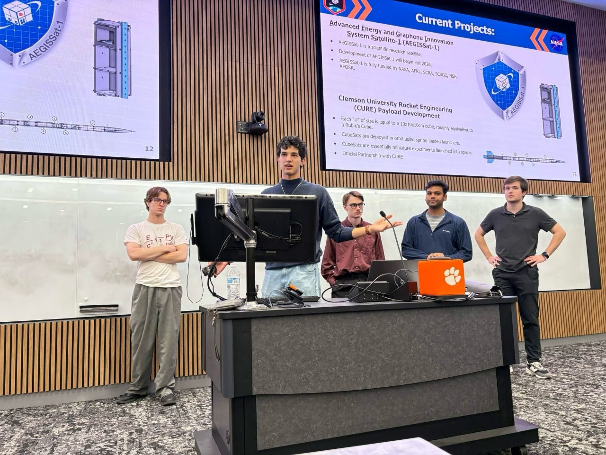
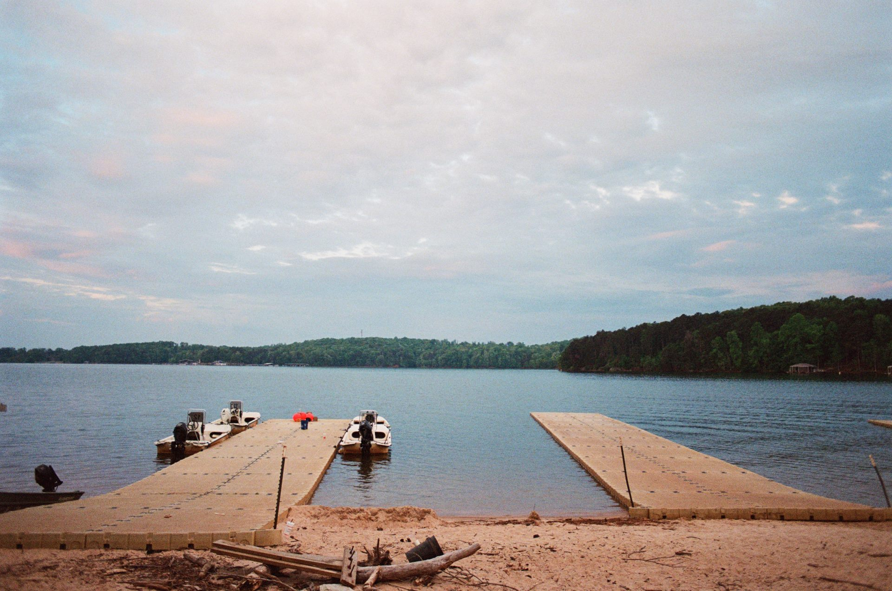
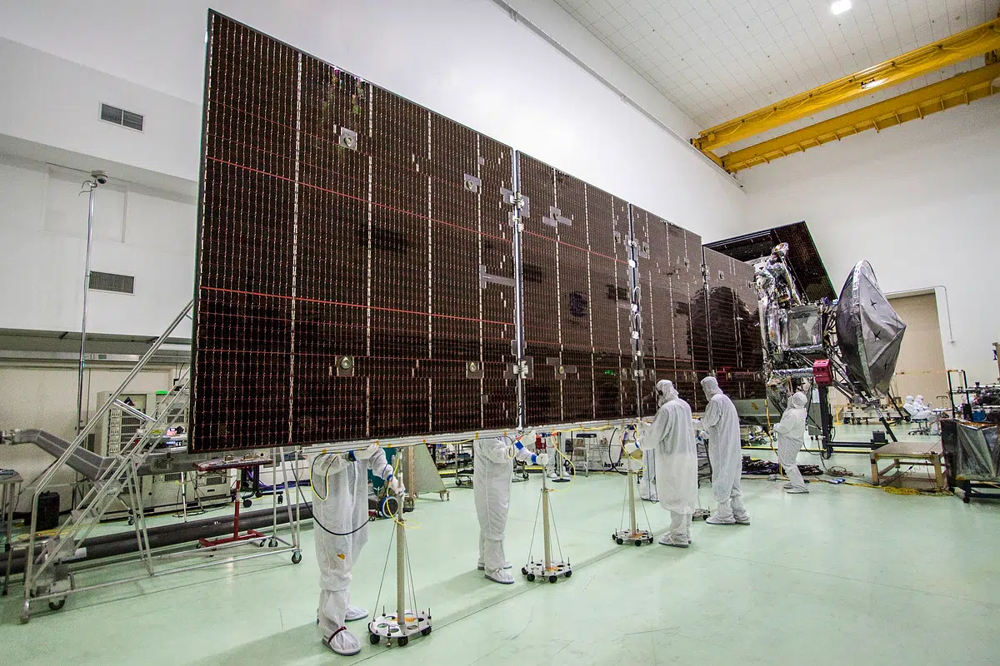
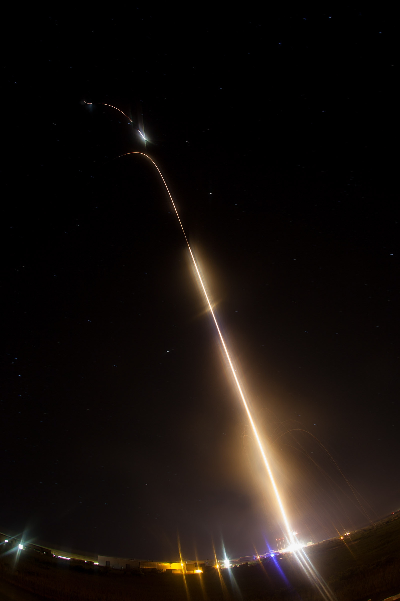
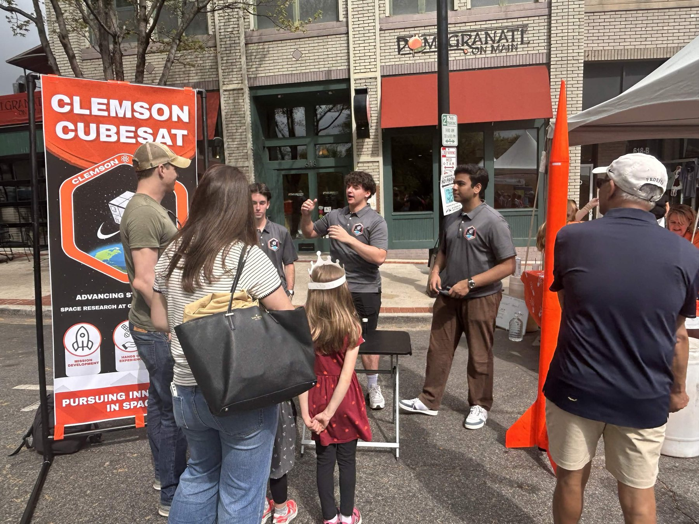

schoolsvisits and demos

Visits and hands-on demos for kids who've never seen a satellite up close.
South Carolina has universities, manufacturers, and students who could build the next generation of space hardware. We connect them and make the case for investing here.
The space industry is spreading beyond its old hubs. Companies want engineers who can work on a real system from day one, and students need to see that those jobs can exist close to home.
So we want our advocacy to be practical: students meeting local employers, employers sitting in on our reviews, and our results reaching the people who decide on research funding and workforce programs.

Visits and hands-on demos for kids who've never seen a satellite up close.

Public talks and open events in Clemson and around the state.

Sponsorship, mentorship, and technical review from regional companies, plus an early look at the students they'll want to hire.

Conversations with state and local leaders about research funding, workforce programs, and what space work needs here.
X-PLORE (Exploration Projects for Learning, Outreach, Research, and Engineering) gives a team of middle or high school students the job of a spacecraft engineering division for a full semester. It runs the way a real mission team works: choices get justified, designs get reviewed, and the work ends in front of people who do this for a living.
